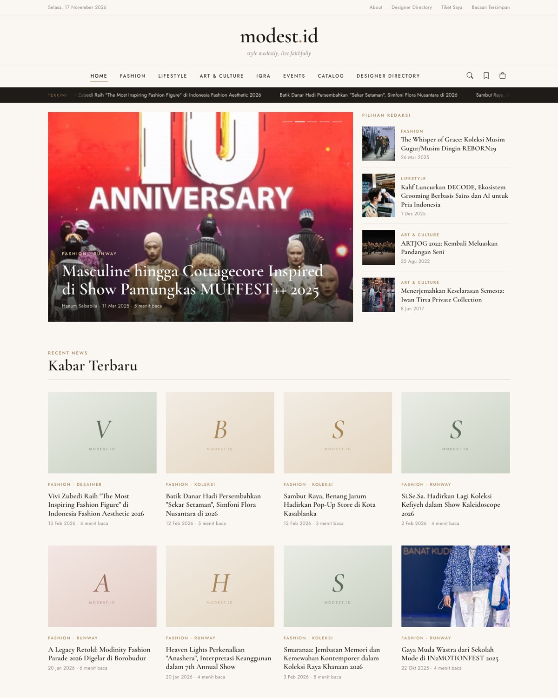
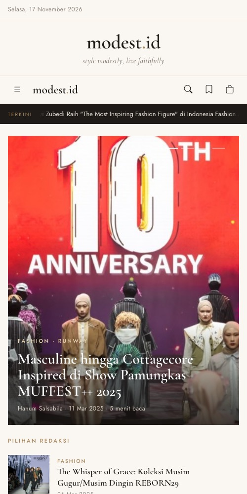
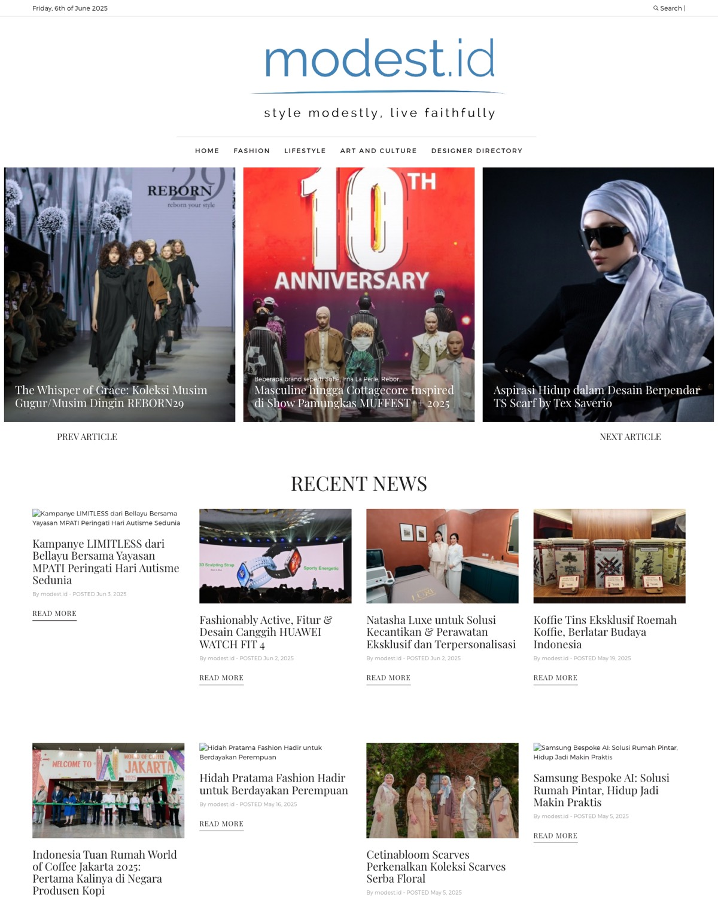
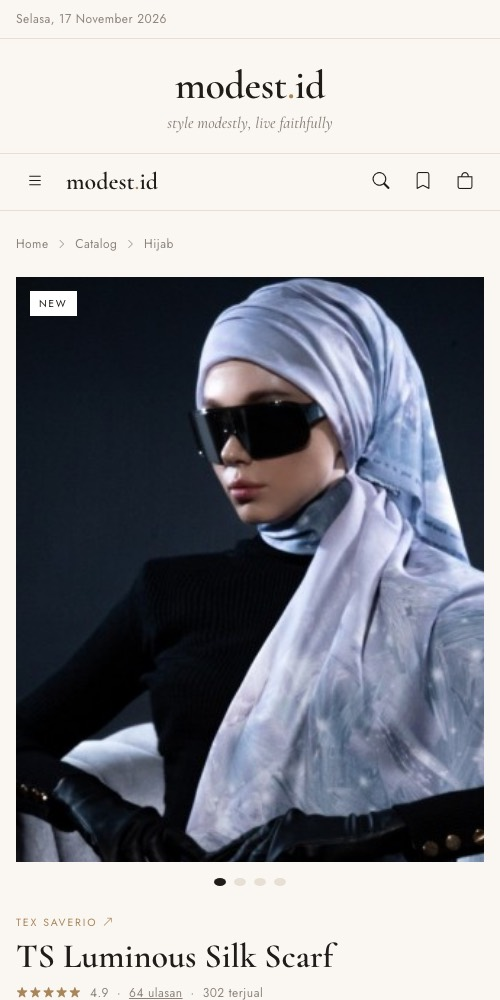
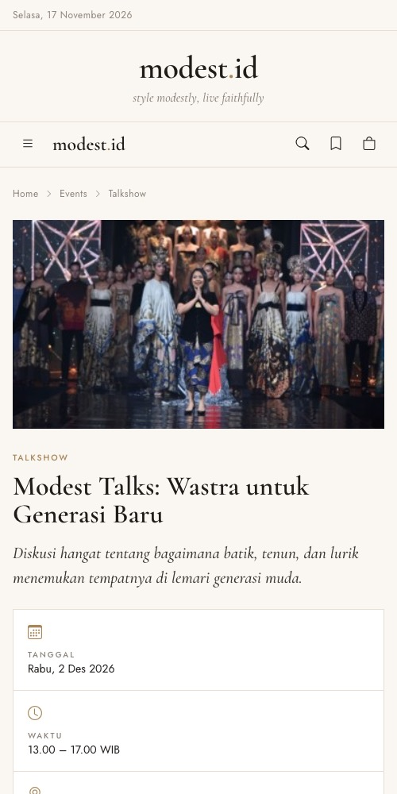

Dari portal berita menjadi rumah gaya hidup modest: membaca, berbelanja, dan bertemu langsung di satu tempat.



Sebelum · 2025Sesudah · 2026Setiap halaman dirancang untuk ponsel: menu offcanvas, galeri yang bisa digeser, dan kotak tiket yang tetap mudah dijangkau.


style modestly, live faithfully.
Ringan untuk dibaca lama, rapi untuk label kecil.
modest/
├── index.html · fashion.html · lifestyle.html · art-culture.html · iqra.html
├── article.html · designers.html · about.html
├── catalog.html · product.html
├── events.html · event.html
├── showcase.html ← halaman ini
├── admin/ login · index · events · orders · attendees · promos
└── assets/
├── css/ modest.css · admin.css · showcase.css
├── js/ data.js · events-data.js · events.js · modest.js · admin.js
└── img/ uploads/ · showcase/